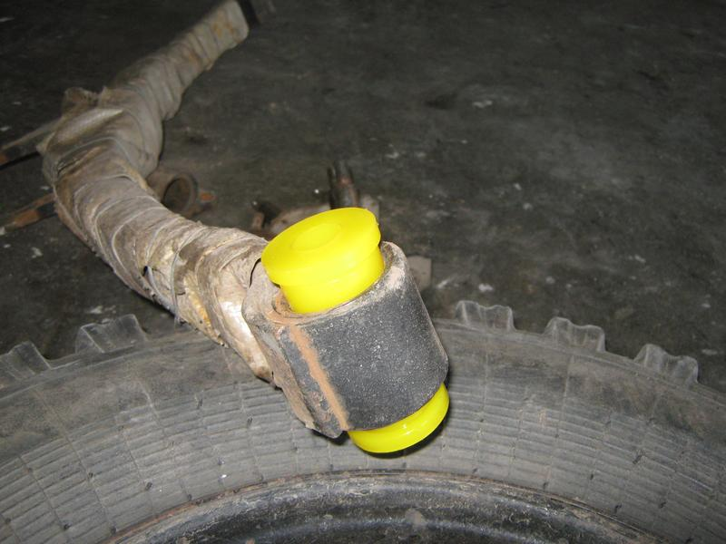
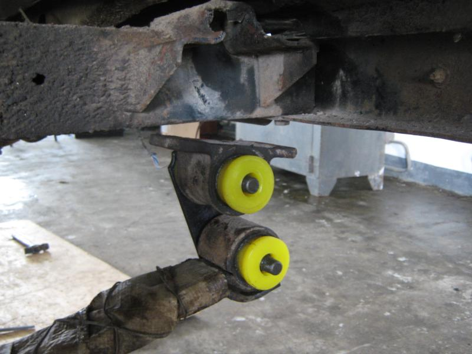
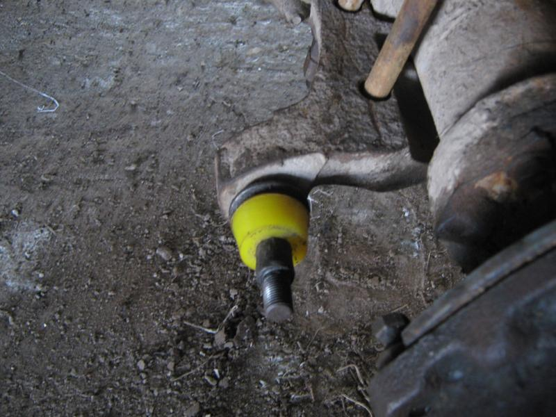
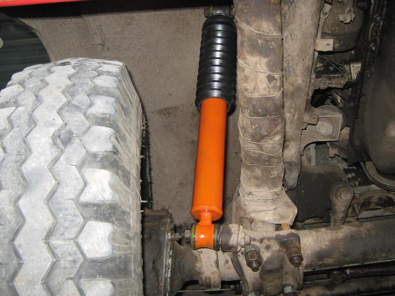
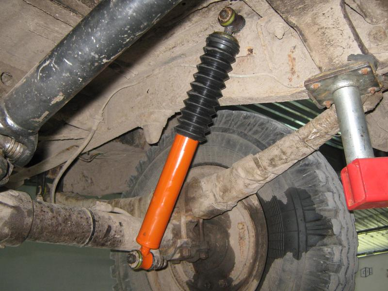
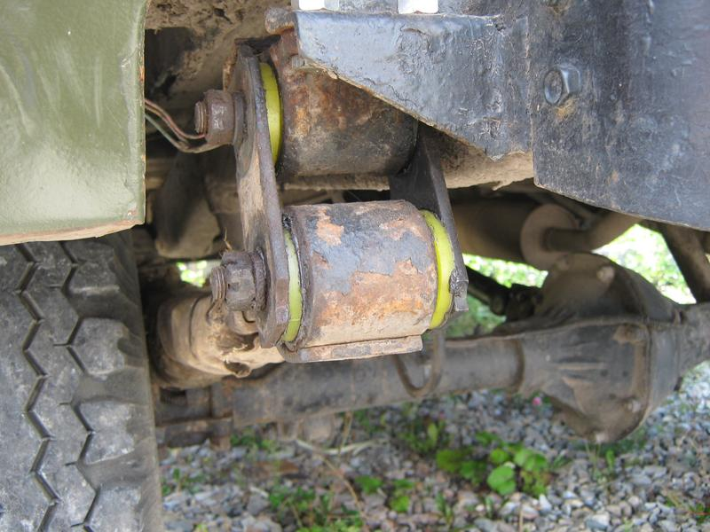
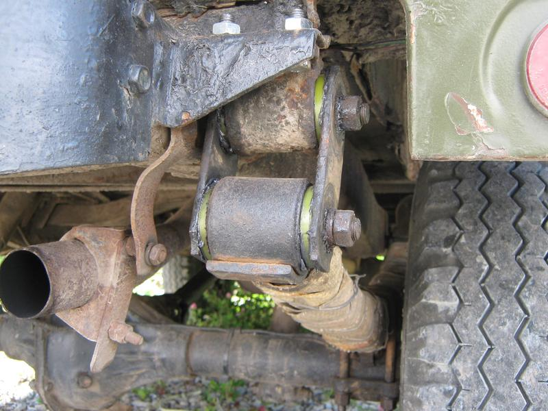

Рессорные втулки из полиуретана в подвеску УАЗ 469
.jpg)
- Рессорные втулки из полиуретана в подвеску УАЗ 469
- Предлагаем немного разбавить Японскую тему в нашем блоге автомобилем советского автопрома – УАЗ 469. Один из наших постоянных клиентов привез данное авто к нам на станцию технического обслуживания. Необходимо было сделать замену определенных запчастей и расходных материалов, заменить подшипники и сальники в мостах, а также исключить некоторые неполадки в электрике. Нет смысла расписывать процесс ремонта целиком и полностью, поэтому сосредоточимся конкретно на подвеске автомобиля. Прежде всего мы произвели замену резиновых втулок на всех рессорах передней и задней подвески. Рессорные втулки УАЗ очень быстро выходят из строя именно на рамном автомобиле, поэтому других вариантов, кроме установки таких запчастей, как втулка полиуретановая, нет. Именно данная деталь позволяет как можно дольше эксплуатировать автомобиль по назначению.

- К счастью, все рессоры были одинаковой ширины, поэтому «тюнинг» данного автомобиля был произведен в минимальном количестве, а комплектация авто оказалась родная.

- Из-за значительного износа, который был на пальцах, мы заменили две из четырех серег рессоры. Если такое действие не произвести, втулка рессорная не будет плотно прилегать к металлу и песок постепенно будет протирать втулку. Именно поэтому данные резиновые втулки были в ужасном состоянии. Следующим этапом была замена амортизаторов. На местах их фиксации нашими специалистами сразу же была установлены такая деталь, как полиуретановая втулка амортизатора.

- Большинство амортизаторов для автомобиля данной марки, представленных на рынке – масляные, с их наличием поведение УАЗа по бездорожью достаточно плачевное. Для улучшения управления и устойчивости автомобиля, согласно нашим требованиям изготовили двухтрубные газо-масляные амортизаторы, которые были рассчитаны на более тяжелые условия эксплуатации.


- Конечным результатом были довольны и мы, и наш клиент.


- Поведение автомобиля на бездорожье изменилось кардинально, подвеска исправно отрабатывала все ямы и неровные поверхности.